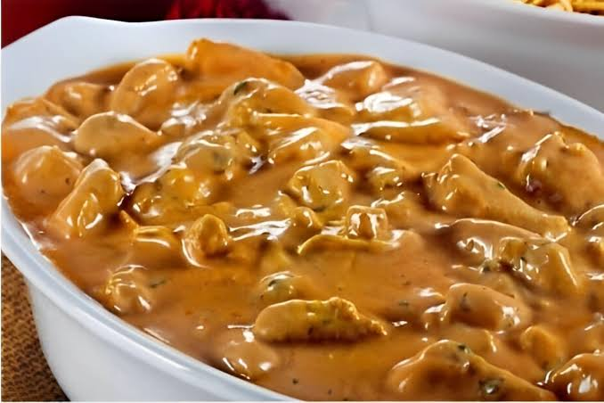

⭐Strogonoff de carne⭐

Ingredientes para receita de 1kg
Ingredientes Principais
- 1 kg de carne bovina (filé mignon, alcatra ou coxão mole) em tiras ou cubos
- 2 colheres de sopa de manteiga
- 1 colher de sopa de azeite
- 1 unidade de cebola picada
- 3 dentes de alho picados ou amassados
- Sal e pimenta-do-reino
Molho Complementar
- 2 a 3 caixinhas (ou latas) de creme de leite (cerca de 400g a 500g no total)
- 3 a 4 colheres de sopa de ketchup
- 2 colheres de sopa de mostarda
- 2 a 3 colheres de sopa de extrato ou molho de tomate
- 1 vidro (cerca de 200g) de cogumelos (champignon) fatiados
- 2 colheres de sopa de conhaque (opcional para flambar)
- Salsinha e cebolinha picadas a gosto
Preparo da Carne e Base
- Aqueça a panela: Coloque a manteiga e o azeite em fogo alto.
- Sele a carne: Adicione a carne aos poucos para não juntar água.
- Tempere na panela: Junte o sal e a pimenta-do-reino.
- Doure bem: Deixe a carne dourar e retire-a da panela.
- Refogue os temperos: Na mesma panela, refogue a cebola e o alho.
Finalização do Molho
- Volte a carne: Misture a carne selada de volta na panela.
- Adicione os condimentos: Junte o ketchup, a mostarda e o extrato de tomate.
- Coloque os cogumelos: Adicione os champignons fatiados e misture bem.
- Desligue o fogo: Apague o fogo antes de colocar o creme de leite.
- Incorpore o creme: Adicione o creme de leite e mexa até ficar homogêneo.
- Sirva quente: Finalize com cheiro-verde e sirva imediatamente.